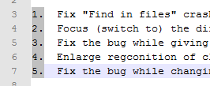
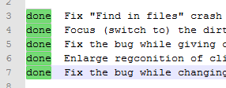
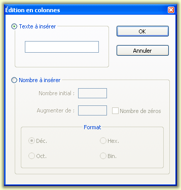

Texto original
Sugiere una traducción mejor
| Prcdent: Autocompletar | edición | Siguiente: Comentarios |
Otra forma de editar un archivo es editarlo en modo columna. Esto significa que el texto se puede seleccionar en columnas, en lugar de en filas ( edición vertical ). Support El soporte de edición de columnas es a través de Scintilla , pero con algunas adiciones a Notepad ++ . Para iniciar el modo de columna para la selección, presione la tecla Alt (predeterminada) en la parte superior de la columna. selección de texto (usando las teclas de navegación o el mouse ), moviendo el cursor hacia abajo o hacia arriba según sea necesario. Funciona mejor si es una fuente no proporcional (ejemplo: Mail New)) se utiliza, porque cada carácter se alineará visualmente con el de la misma columna arriba y abajo ( para más información, consulte el Configurador de tinción de sintaxis ).
Cuando se selecciona el texto en este modo de llamada rectangular, la entrada del teclado cambiará cada columna de caracteres seleccionada, insertando el carácter ingresado o insertando una nueva columna. . Use la tecla ESC para salir de este modo de entrada especial. Para volver atrás una columna, utilice la función , no la clave de vuelta a los resultados.
| Antes de escribir "do" | Después de escribir "do" |
|  |  |
El comando muestra un mensaje que le recuerda la existencia de este modo y los atajos de teclado predeterminados. De hecho, no aparecen en ningún otro menú.
El cuadro de diálogo Editor de columna está diseñado para facilitar el trabajo con columnas. Se puede abrir seleccionando
